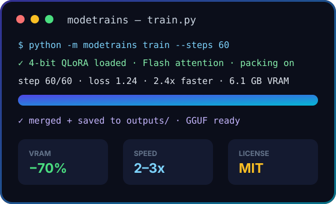

modetrains by Salim Slimani — 4-bit QLoRA, Flash / SDPA attention, sequence packing, 8-bit optimizers, SFT · DPO · GRPO. Open source, no sign-up, runs on your own GPU.

Six techniques working together for maximum throughput.
Three steps from install to trained model.
pip install torch --index-url https://download.pytorch.org/whl/cu121 pip install -r requirements.txt pip install -e . python -m modetrains info
from modetrains import ModeTrainsConfig, FastModel, train_sft, save_merged from modetrains.data import load_chat_dataset cfg = ModeTrainsConfig.fast_default("meta-llama/Meta-Llama-3-8B-Instruct") model, tok = FastModel.from_pretrained(cfg) model = FastModel.get_peft_model(model, cfg) ds = load_chat_dataset("yahma/alpaca-cleaned", split="train[:1000]") trainer, stats = train_sft(model, tok, ds, cfg, dataset_text_field="text") save_merged(model, tok, "outputs")